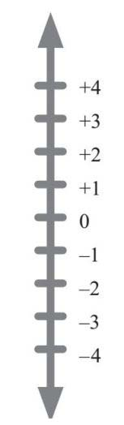
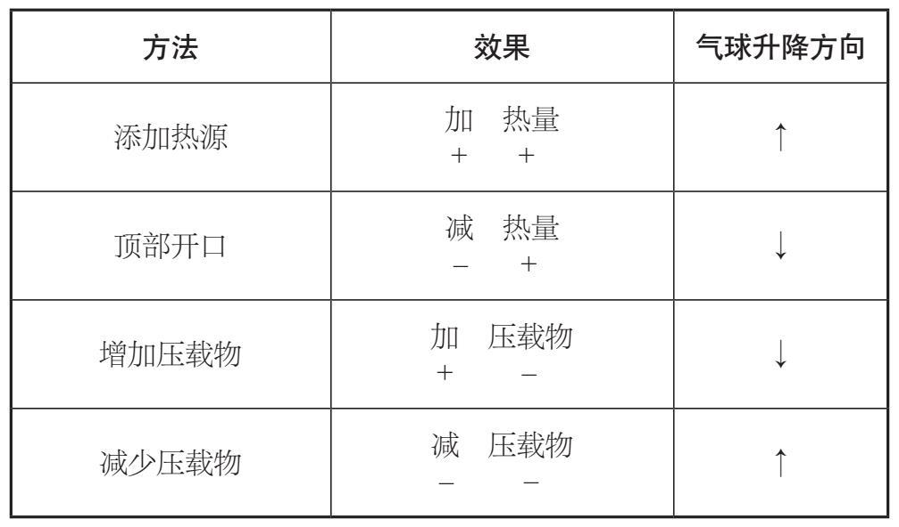
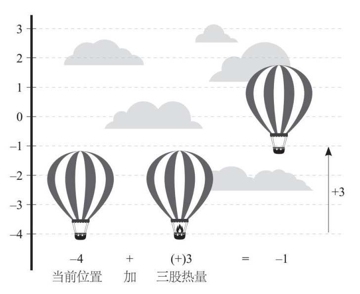
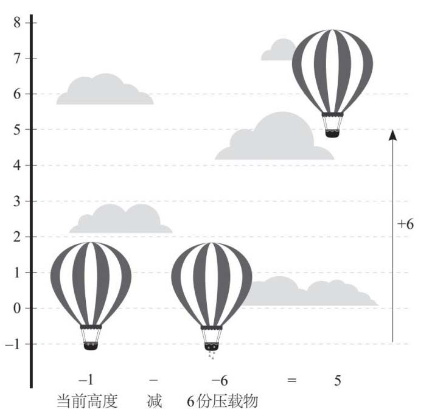

我将在本章讨论基本的计算法则。我从来没有见过一个不会数数的成年人。我们在上学前，数学是学习的第一步。许多小孩甚至在不理解数字是什么时，就能够从1背到10。
有人认为数学就是在理解某些原理的基础上，应用这些原理来获得某种结果。理解和处理过程必不可少。然而，我们中的很多人往往对知识点一知半解（或者没有机会去理解），而忙于去计算。问题是，和其他技能一样，如果不重视理解的过程，结果就会变得更糟。而且，理解也会日渐削弱，只是方式不同。我之所以喜欢数学，是因为作为一个生活在北半球小岛上的普通人，我处在理解数学金字塔的顶端，它可以回溯到几千年前的历史、人和文化。有很多人的数学金字塔比我高得多，但我选择的职业是：帮助别人建立他们的金字塔。我从经验中得知，记住事实、算法和过程并不重要。如果你不以理解作为算术的基础，在某个时候，你的数学金字塔就可能会倒塌。
在讲解算术方法之前，我想简单地介绍一下“+”和“–”这两个符号的双重性质。这两个符号是在15世纪晚期由德国传入西方国家的。约翰内斯·威德曼（Johannes Widmann，约1460—1498）在1489年写了一本书——《各行业的整洁和敏捷计算》（Neat and Nimble Calculation in All Trades ），最早记录了这两个符号的出现。从一开始，每个符号就有两个意义，有时会让人们难以区分。
这两个符号既可以是运算符号，即加或减，也可以表示正或负。它们既是运算指令符号，也是描述符号，有时当作动词，有时用作名词。+3可以表示“加3”或“正3”，那么该如何区分它们的含义呢？
学习数学时，一种常见的做法就是引入数轴的概念。数轴是一条假想的线，它可以帮助你进行心算，并理解“大于”和“小于”的概念。我经常会问我的学生，他们脑海中的数轴是水平的还是垂直的，数字是朝哪个方向延展的。我敢肯定，这可能会引发一些非常有趣的研究。在这里我打个比方，把数轴比作垂直的温度计。

在这里，“+”和“–”起到了描述的作用，它们让我们知道一个数是正数还是负数。对于正数，一般不在前面标+号，但是这里写出+号是为了强调数轴中的正数部分。我们可以看到，0正好在中间，所以它既不是正数，也不是负数。
现在，假设你是数学热气球队队长。你有两种方法可以改变气球的高度：改变气球的热量和改变气球的压载物数量。热量可被看作正数，因为气球会随着热量的增加向上飞去。我们有两种方法改变气球的热量：添加更多的热源，或在气球顶上开通风口把热空气散出去。压载物可被当作负数，因为它会使气球下降。把压载物扔出去，或者让朋友用无人机运送来压载物，这两种方法都可以改变压载物的数量。下表用数学运算来表示这4个方法：

现代数字的书写方法叫作阿拉伯数字体系，它融合了印度及阿拉伯两种文化的精髓，实现了数字形式的突破。印度天文学家阿耶波多（Aryabhata，475—550）是第一个使用位值体系的天文学家，大约在公元500年，他使用了十进制体系，其中每列数值是前一列的10倍。另一位印度天文学家婆罗门笈多（Brahmagupta，598—670）完善了这个体系，他使用了9个数字符号，并且用一个点来表示一个空列，这个点后来发展成了我们现在看到的0。
由于新数字体系的计算效率倍受好评，所以在世界范围内得以普及。9世纪，一位阿拉伯数学家穆罕默德·花拉子密（Muhammad al-Khwarizmi，约780—约850）写了一篇关于算法的论文，后来被翻译成拉丁语，这使得西方世界首次接触到了这些数字。
遗憾的是，该数字体系在欧洲没有产生多大反响。曾在阿拉伯世界受过教育的比萨的莱昂纳多（Leonardo of Pisa，约1175—约1240），又名斐波那契（Fibonacci），于1202年在他的《计算之书》（Liber abaci ）中使用了这个数字体系。这本书建议店家和数学家扔掉算盘，采用颇具潜力的阿拉伯数字进行计算。然而，这本书也是用拉丁文编写的，所以许多人也读不懂。1522年，亚当·里斯（Adam Ries，1492—1559）用德语写了一本书，解释了如何使用这些数字。最终，那些有文化素养但没有受过古典教育的人也可以应用这套数字体系了。
我们会接受（或者死记硬背）表格的最后一行的结果，但是并不知道其中的原因。希望本书这个热气球的例子能对读者有所帮助！
我们现在已经厘清让气球升降的逻辑，数学家称之为“运算”。如果我们想计算高度，即在数轴上的相应位置，就要结合在数轴上的当前位置以及操作的变化进行计算。运算中的第一个数字显示了当前的高度，余下的计算表示我们将采取什么动作。例如，“–4+3”可以表示成如下的过程：

显然，这意味着气球将沿数轴上升3个位置，从–4到–1 [1] 。因此：–4+3=–1。
接下来是一个略微棘手的例子，包含多个负数，具体如下：

减掉6份压载物可以让气球上升6个高度，所以：–1 –(–6)=5。
现在，我们知道气球何时上升，何时下降了。下一章我们将进行更加复杂的算术和其他四则运算。
[1] 一个真正的热气球会继续上升，但这里我们认为它是数学意义上的热气球，而不是真正的热气球。